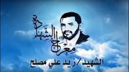
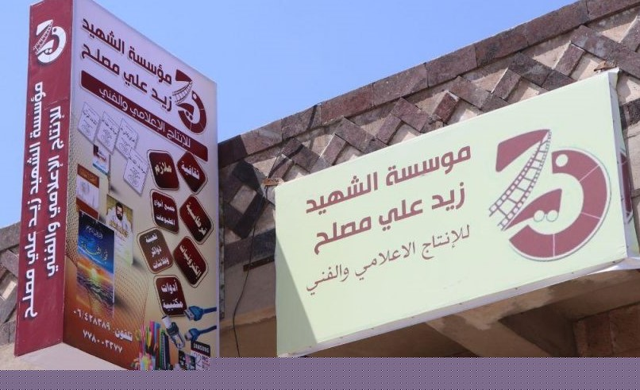

سلم للنصر أو معراج للشهادة
هو السيد العلامةالمجاهد الشهيد / زيد علي مصلح سند . يتصل نسبه الشريف بالامام الهادي يحيي بن الحسين حفيد الأمام علي بن أبي طالب صلوات الله وعلى اّله , ولد الشهيد سنة 1348 هجرية , تربى وترعرع في أحضان أسرة علم عرفت بالصلاح والتقوى وشمائل الأخلاق الكريمة في أحد وديان مران _خولان عامر - صعدة ب
نبذة عن الشهيد زيد علي مصلح
أهم علمائه وأعماله وجهاده وصبرة في سبيل الله
سلم للنصر أو معراج للشهادة
نبذه عن الشهيد :تلقى تعيلم على يد السيد العلامة قددوة المجاهدين ووارث علوم أهل البيت المجاهد /بدرالدين بن أمير الدين الحوثي (رضوان الله عليه) ومن أخذ العلم والفقه والشجاعة والجهادي في سبيل الله والشعور بالمسؤولية والعمل لما فيه مصلحة العباد والبلادم
أهم اعماله
اقرأ المزيد
اّخر أيام حياة الشهيد زيد علي مصلح أثناء الحرب الأولى

سلم للنصر أو معراج للشهادة
نبذه أخيرة عن الشهيد : كان الشهيد وأثناء الحرب الضالمة من قبل السلطه العميلة قد شنت هجوم ساحق على قرى مران فبرز الشيد بكل قوة وصلابة وعزم وثبات لانظير له دفاعا عن المشروع القراّني وعن المسثضعفين أنذاك وكان الدرع الحصين أثناء تواجده في الجبهة
أبرز المواقف التي قام بها الشهيد أثناء الحرب الأولى :
- تصدى بكل بسالة وشجاعة وبطولة لعملائ أمريكا وضرب أروع الأمثلة في التضحية في سبيل الله
- عندما كان يناديه أولياء اليهود والنصارى أن يسلم نفسه كان يجيبهم بقوله :(لقد سلمنا أنفسنا للهعزوجل )
- عندما رأى جموع غفيرة تستعد للزحف عليه هو وقليلمن أصحابه تمثل بقول علي أبن أبي طالب :(ولله لن يصلوا إليك حتى أوسد في التراب دفينا)
- ولق بعث برسالة إلى الشهيد القائد انه ثابث في مترسه وأطلق مقولته التاريخية :(سأجعل من مقامي هذا سلم للنصر أو معراج للشهادة)
- استشهد في يوم الخميس 19 جمادي الاول 1425هـ فقال الشهيد القائد (رحم الله أخي زيد لقد نال ماتمناه)
نبذة عن مؤسسة الشهيد علي مصلح

هي مؤسسة إنتاج إعلامي تقوم على أساس تصحيح الثقافات .فهي تعتبرأول مؤسسة ثقافية تأسست عام 2008م بحافظة صعدة,وتهتم بنشر الثقافة القرانية في أوساط المجتمع وفق النهج الذي أسسه الشهيد القائد ومنذ بداية المشروع القراني والذي كانت تهتم بتسجيل محاضرات السيد حسين بدر الدين الحوثي وكذالك تنظيم الفعاليات وطباعة اللوحات وكذالك المسرحيات التى توصل الهدف كمرحلة بدائية في بداية نهوض المشورع القراني حتى توسعت المؤسسة وأصبح له فروع في كل محافظة بتوسع المشروع القراني
أبرز الأنشطة والوسائل لدى مؤسسة الشهيد زيد علي مصلح :
- الأنشطة الأعلامية :تتضمن في إنتاج الفلاشات الروحانية والأفلام القصيرة والأفلام الوثائقية
- الأنشطة الثقافية:وتتضمن في طباعة ملازم من هي القران الكريم ,وكذلك طباعات الكتب والشعارات
- الوسائل المرئية :تتضمن في توفير محاضرات السيد عبدالملك بدر الدين الحوثي أول باول وتنزيلها
- الوسائل المسموعة:تتمثل في توفير القران الكريم ,والادعية الروحانية وزوامل أنصار الله